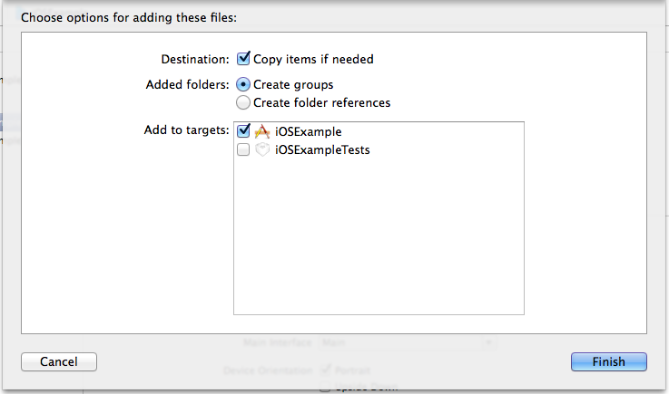
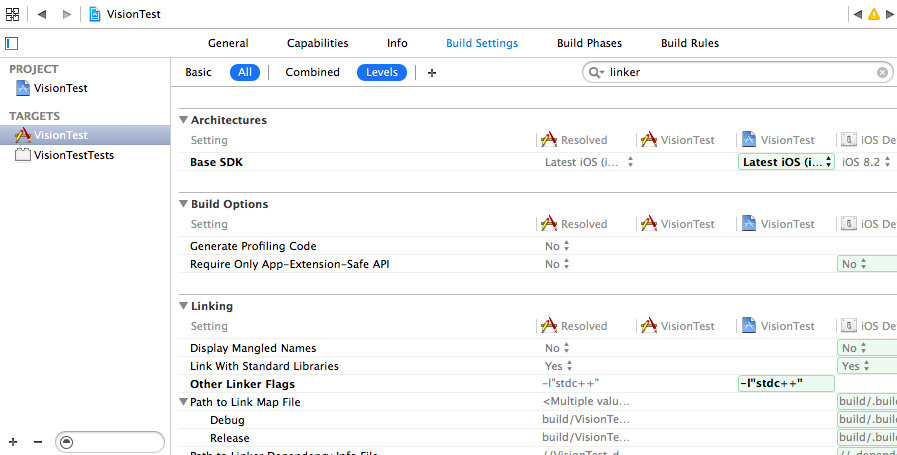

Getting started¶
The Gini Vision Library is shipped as a Cocoa touch framework. You must integrate the framework into your application before you can use it.
Integration can be done either manually or using CocoaPods. The preferred way is using CocoaPods.
Integrate using CocoaPods¶
To add the Gini Vision Library to your XCode project you must add the Gini Podspecs repository and the Gini Vision Library pod to your Podfile:
source 'https://github.com/gini/gini-podspecs.git'
source 'https://github.com/CocoaPods/Specs.git'
pod 'GiniVisionSDK'
The Gini Vision Library can only be installed by CocoaPods if you also set your Gini username and password as environment variables before using $ pod install. The environment variables are GINI_USER and GINI_PASSWORD. These can be set in many ways and we recommend not setting them globally (in .bash_profile or similar), but either using a script or specifying the variables on the command line directly.
Using a script:
export GINI_USER=""
export GINI_PASSWORD=""
pod install
Or as a single line command:
$ GINI_USER="" GINI_PASSWORD="" pod install
CocoaPods should have installed the Gini Vision Library and you are now ready to write some code. Learn next how to scan a document.
Integrate the library and frameworks manually¶
The library consists of three files:
- The GiniVision.framework containing the library in a binary form.
- The GiniVision.bundle containing all UI assets (images, storyboards, etc).
- The opencv2.framework containing a build of the third-party OpenCV library in version 3.1.0.
It is absolutely necessary that you add all three files. Otherwise the framework and therefore your application may crash.
We recommend downloading our build of OpenCV 3.1.0 hosted at https://raw.githubusercontent.com/gini/dependencies/master/OpenCV/3.1.0/opencv2.framework.zip. We removed the ARM NEON optimizations from libpng 1.6.19, which caused the Undefined symbols for architecture arm64: "_png_init_filter_functions_neon" error.
To add the library to your application, simply drag the files from Finder and drop them into your application’s files (on the left side of XCode). There will appear a popup where you have to select the target. Make sure that you select the correct target (which is the target of your application) and that “Copy items if needed” is checked.
Also make you sure that you linked all the needed iOS frameworks. You can check it in the “Linked Frameworks and Libraries” section in the General settings page of your applciation’s target.
The needed iOS frameworks are:
- CoreMedia.framework
- AVFoundation.framework
- AssetsLibrary.framework
Set the linker settings manually¶
The Gini Vision Library is written in Objective-C++, not in Objective-C. Because of that, you need to set a linker flag. Otherwise your application will not build due to linker errors. In the Build Settings of your application, you need to add the value -l"stdc++" to “Other Linker Flags” in the Linking section.
Hint
If you see “Apple Mach-O Linker Errors”, for example “Undefined symbols for architecture x86_64” it is very likely that you forgot to set the linker flag or set the linker flag incorrectly.
Next: Use the Scanner Activity¶
After you have integrated the Gini Vision Library and your application build successfully you are good to go. Learn next how to scan a document.